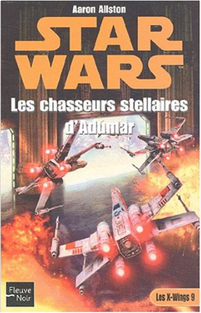

Books
Movies
Albums
Videogames
Games
BD
BD Camille
Blu-ray
Business
Camille
Comics
Cooking
Lego
Manga
Pauline
Photography
Star Wars
T'choupi
Travel
TV Shows
Un livre dont vous êtes le héro
Vinyl
Walt Disney
3
4
5
6
7
star wars, tome 47 : le nouvel ordre jedi, partie 4, point d'équilibre
cathy tyers
5
star wars, tome 48 : le nouvel ordre jedi, partie 5, l'aurore de la victoire, partie 1, conquête
greg keyes
4
star wars, tome 49 : épisode II, l'attaque des clones
r.a. salvatore
4.5
star wars, tome 50 : le nouvel ordre jedi, partie 5, l'aurore de la victoire, partie 2, renaissance
greg keyes
3

star wars, tome 53 : les x-wings, partie 9, les chasseurs stellaires d'adumar
aaron allston
4
star wars, tome 54 : moi, un jedi, partie 1, mirax a disparu
michael a. stackpole
2
star wars, tome 55 : moi, un jedi, partie 2, l'héritage de corran horn
michael a. stackpole
star wars, tome 56 : le nouvel ordre jedi, partie 6, étoile après étoile
troy denning
4
star wars, tome 57 : le nouvel ordre jedi, partie 7, sombre voyage
elaine cunningham
4
star wars, tome 58 : le nouvel ordre jedi, partie 8, derrière les lignes ennemies, partie 1, le rêve rebelle
aaron allston
5
star wars, tome 59 : le nouvel ordre jedi, partie 8, derrière les lignes ennemies, partie 2, la résistance rebelle
aaron allston
4
star wars, tome 60 : le nouvel ordre jedi, partie 9, le traître
matthew stover
4.5
3
4
5
6
7


 Made with Delicious Library Made with Delicious Library
Made with Delicious Library Made with Delicious Library